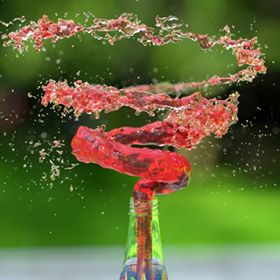
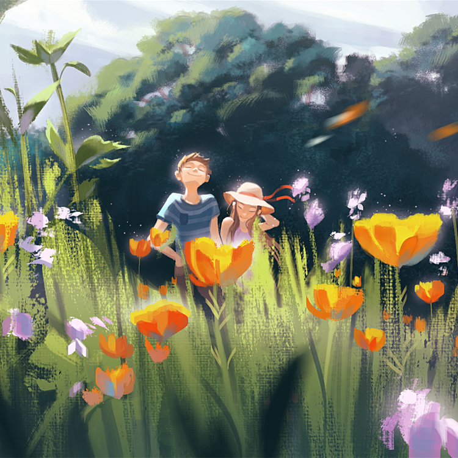
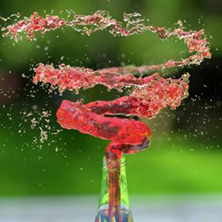
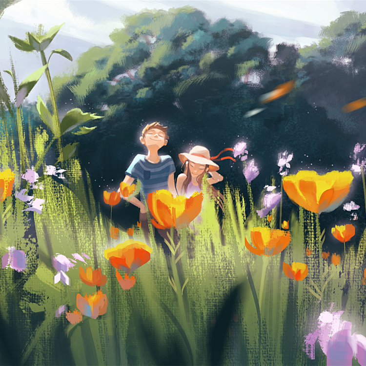


 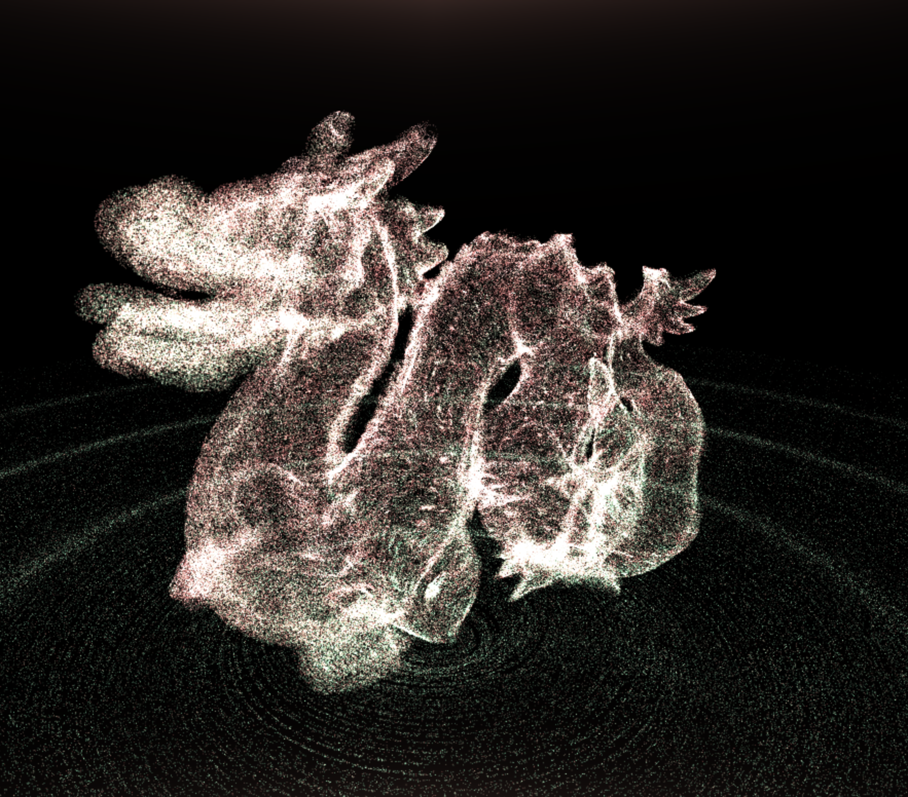
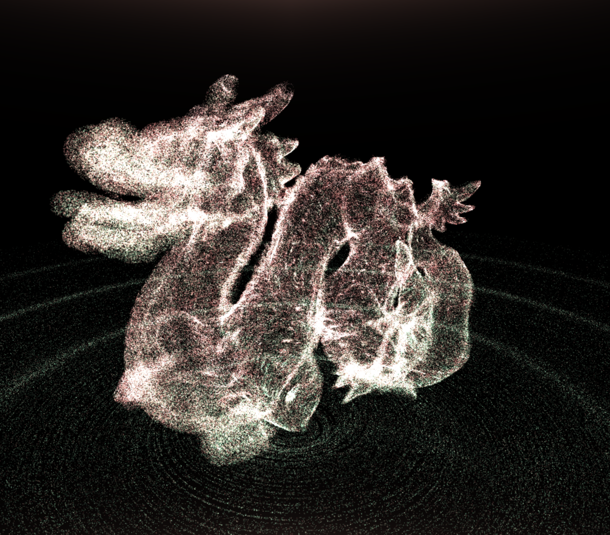
 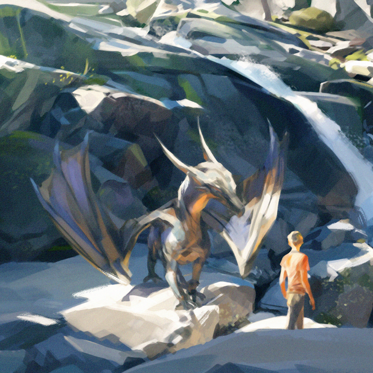
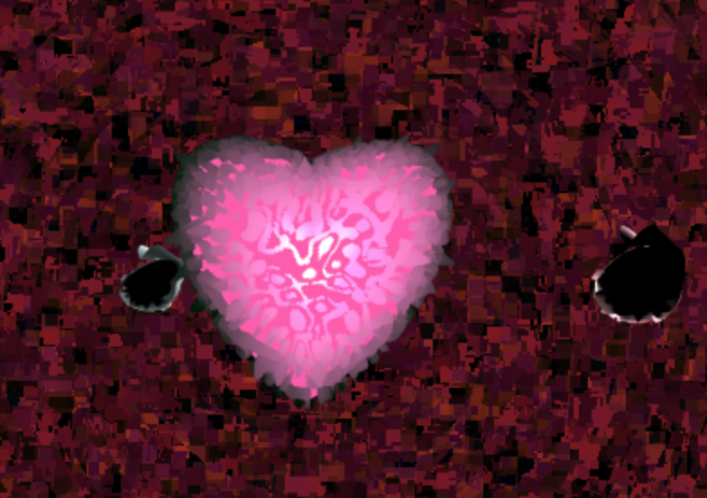
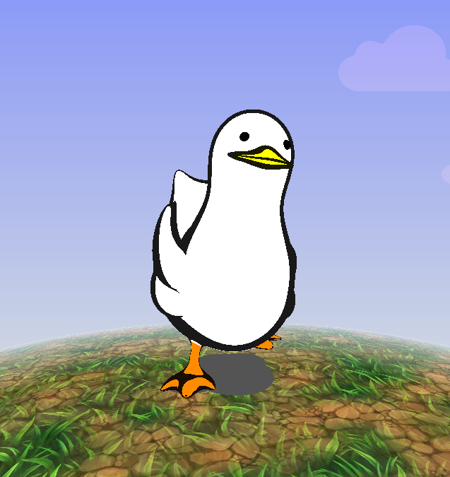
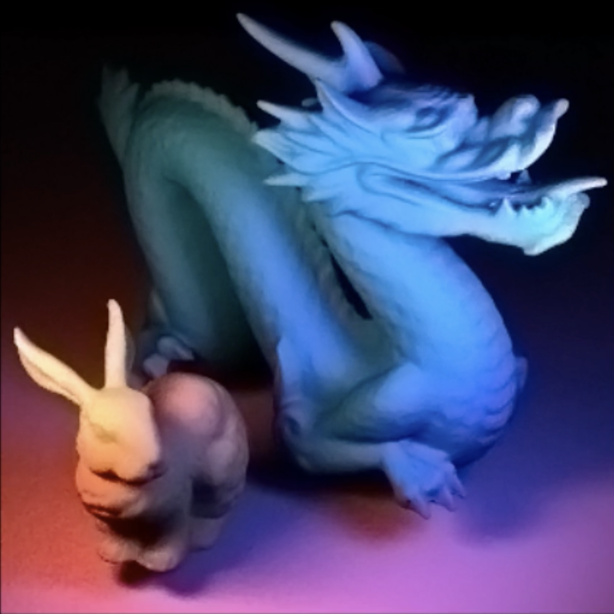
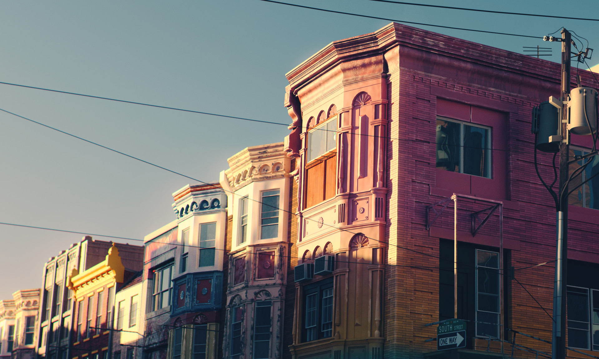
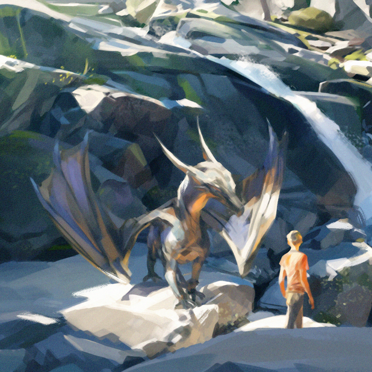
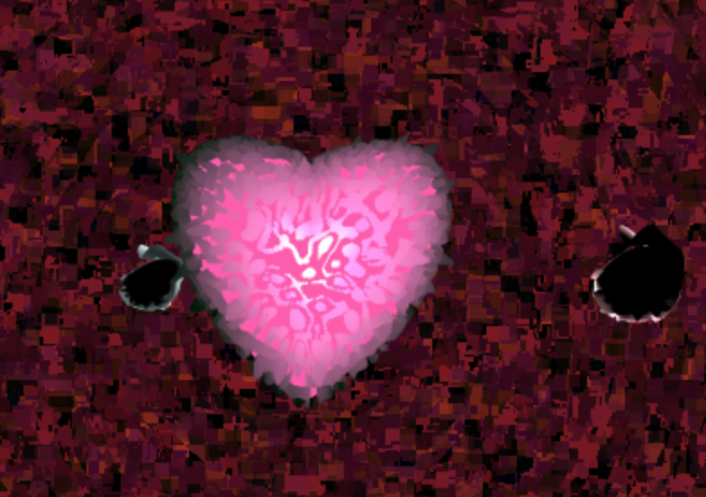
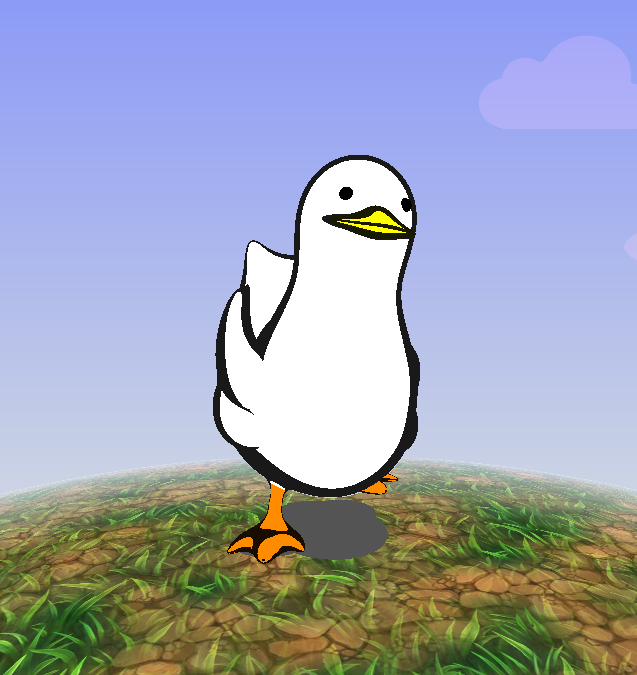
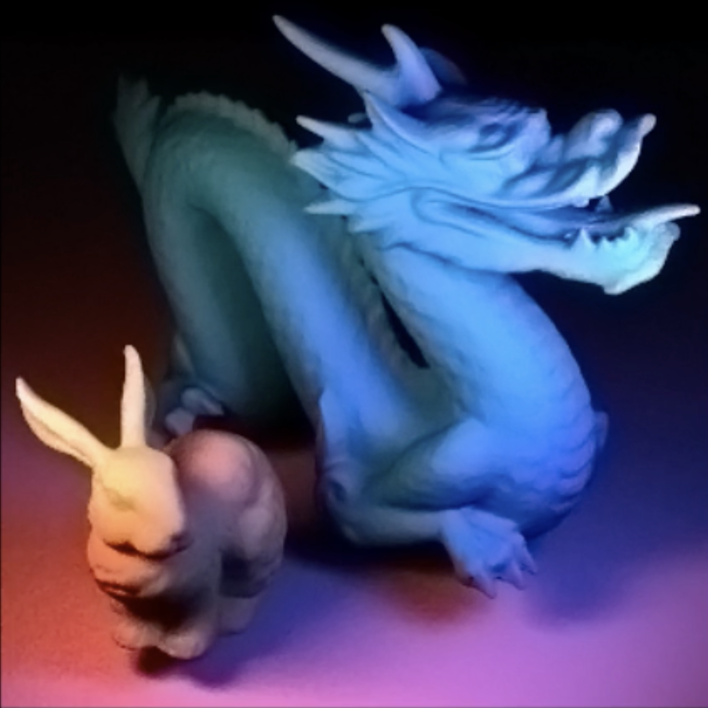
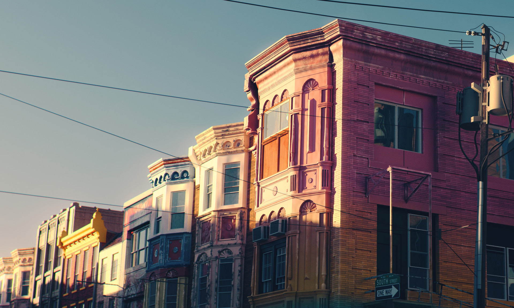
Bolivia: Reconstructing the Past
Group research project directed by Dr. Norman Badler and Dr. Clark Erickson to accurately reconstruct a depiction of the hydraulic landscape of Pre-Colombian Baures, Bolivia. The goal of this project was to be able to create an interactive virtual environment that could be used to educate audiences about the time and location. The project is still in progress and has a class, CIS 106, dedicated to it.
Full Video
Credit - Myles Al Yafei, Josh Nadel, Youssef V Kamal, 2017
[Unreal Engine 4, Maya, MotionBuilder, Adobe Design suite, USGS Earth Explorer]
Pathtracer Metal Spheres: Physically-based Rendering
Physically-based path trace rendered spheres with varying metal reflective properties.
Credit - Alex McCraw, 2017
[C++]
Juice Spiral
Full CGI TV commercial for Êërįkåškø juice. Responsible for all aspects except for bottle's texture pattern design.
Full Video
Credit - Jacky Lu, 2017
[Houdini]
Garden Painting: Poppies
California poppies.
Credit - Felicia Chen, 2018
[Photoshop]
Procedural Tree: L-System Tree
A procedural tree generator using L systems.
Credit - Kathryn Miller, 2018
[WebGL, Typescript]
MineCraft: CandyLand
A simplified version of Minecraft that is candy land themed. Features include procedural terrain, river and cloud generation, animated textures, interaction with the environment, shadow mapping, and a travelling Alpaca.
Credit - Kathryn Miller, Myles Al Yafei, Grace Gilbert, 2018
[C++, GLSL]
Research: Eye Simulation
A realistic, expressive eye simulation that behaves according to emotion and behavior patterns.
Credit - Grace Gilbert, Christine Fu, Xuan Huang, 2017
[Maya, Python, Houdini]
Galaxy, Nebula and Stars Shader: Galaxy Shader
A fully procedurally-generated galaxy that was made with fractal noise and some other cool math.
Credit - Joe Klinger, 2017
[GLSL, ShaderToy]
Procedural Desert
The goal of this project is to create an environment that feels responsive and alive. We wanted to create an animated environment with interactive procedural animations and models. We were motivated by games like Jounery and DreamTank.
Credit - Linshen Xiao & Hanming Zhang, 2018
[WebGL]
Dragon: There are a million
GPU particle system using WebGL2
Credit - Byumjin Kim, 2018
[WebGL2]
Character: Phantom Lancer
A high-definition portrait model of Phantom Lancer from the game Dota 2. Heavy emphasis on facial anatomy and sculptural detail.
Credit - Josh Nadel, 2017
[Maya, ZBrush, Arnold]
Dragon Painting: Follow
Inspired by a summer hike and my fascination with dragons.
Credit - Aliya Chen, 2018
[Photoshop]
Procedural Planet: Heart
Heart created out of math. There are two lonely bunny moons revolving around the damaged heart.
Credit - Sang Lee, 2018
[WebGL]
Procedural Duck: Duck Never Fly
Using SDF(signed distance function)s and toon shading, I created the duck referred to in a GIF reference image.
Credit - Byumjin Kim, 2018
[WebGL]
Photon-Mapped Dragon
Monte Carlo Pathtracer complete with a Full Lighting Integrator, a BVH acceleration structure, multiple importance sampling, global illumination, focal distance changes, different light source types (point, spot, area), and photon mapping.
Credit - Hannah Bollar, 2016
[C++]
Untitled
Credit - Mariano Merchante, 2018
The SIG Center hosts a large and active ACM SIGGRAPH Student Chapter.
Penn's SIGGRAPH Chapter is a computer graphics oriented group which focuses on fostering a community of students interested
in animation, computer science, games, general graphics, and VFX.
Some of SIGGRAPH's activities include a Demo Reel Night, weekly talks
on computer graphics topics, tutorials, panels, and movie nights.
Click picture for portfolio


Have questions?
Want to suggest an event?
Swing by for a cup of java(script)!
SIGLab, Penn
upennacmsiggraph@gmail.com